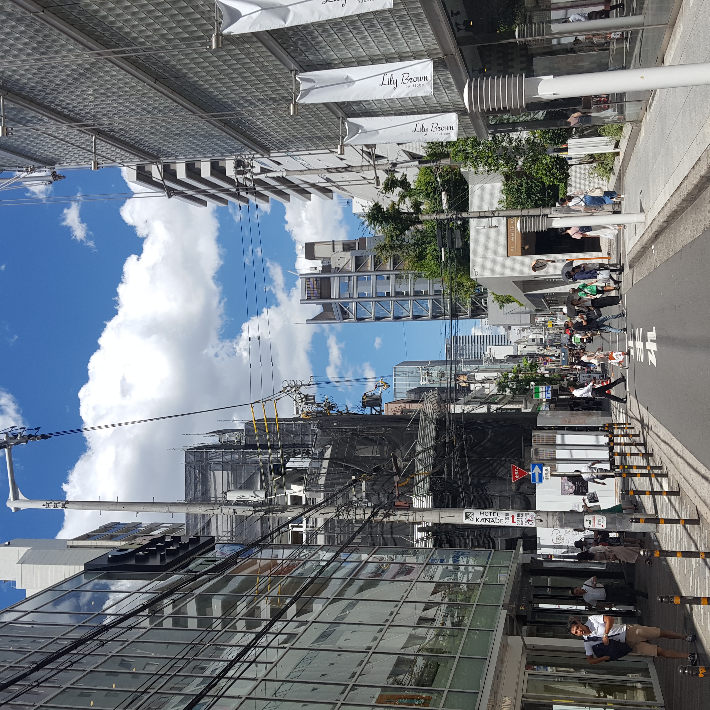
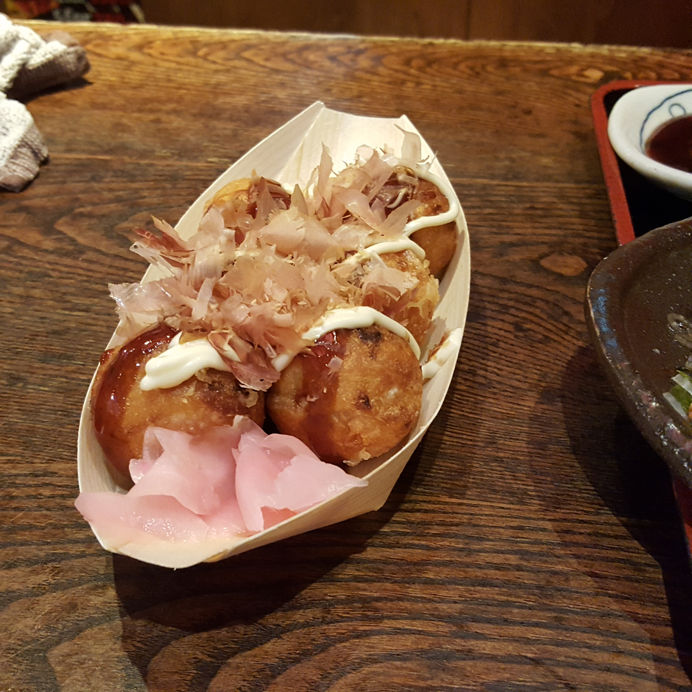
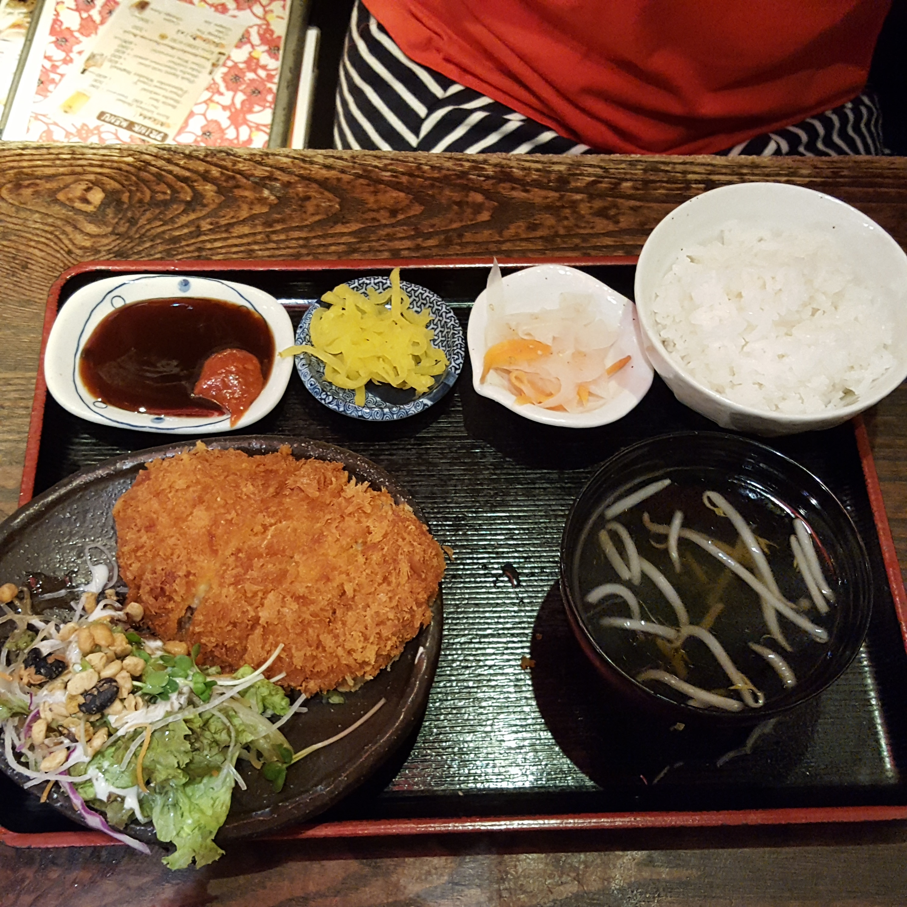
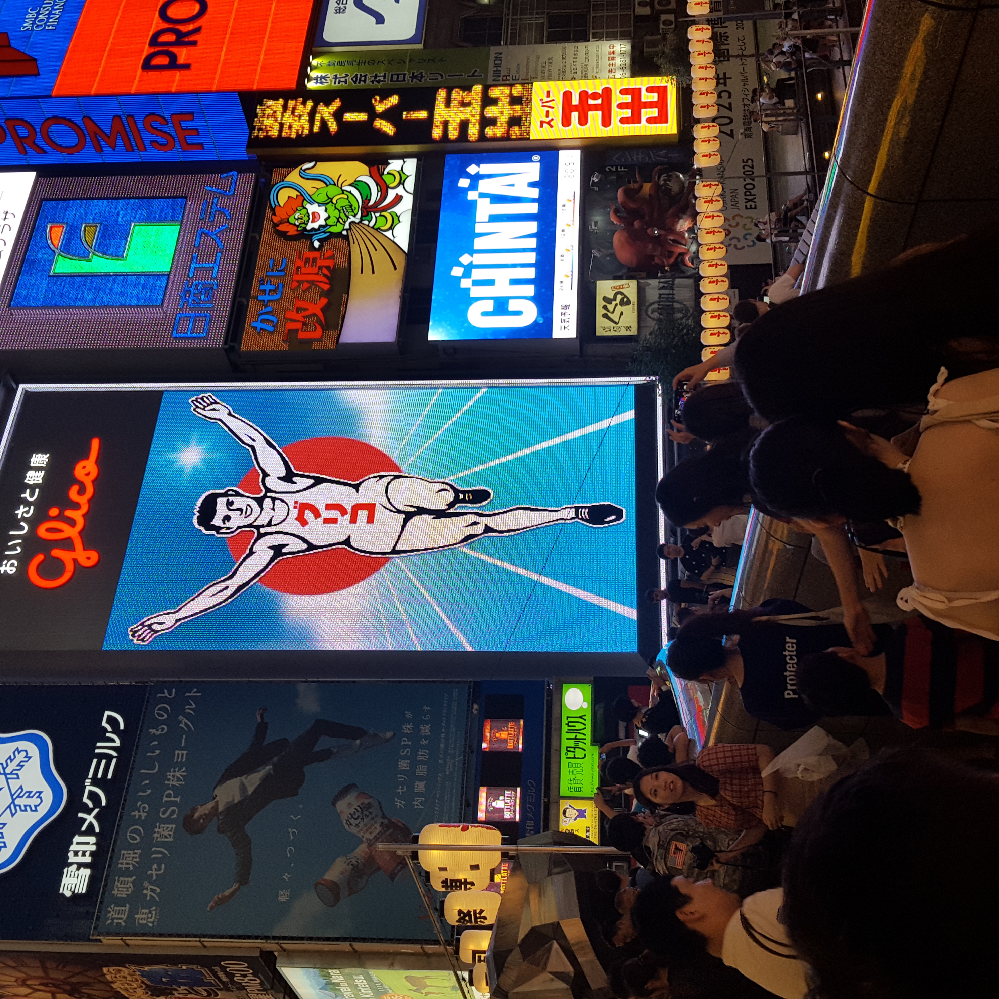

August, 20182018년 8월, 중순 여름 방학. 오사카로 여행을 떠났었습니다. 오사카의 거리는 한적했으며 여행 내내 햇빛은 쨍쨍했습니다. 여름방학이 끝나기 직전, 여유로움을 느끼고 싶었던 저는 조용한 거리 구석 구석을 다녔습니다. 일본 제 2의 도시라는 오사카였어도 번화가 주변 거리의 한 낮 한적함이 좋았습니다. |
 |
|  |
앗치치혼포오사카에는 정말 유명한 타코야끼집 2곳이 있습니다. 쿠쿠루와 앗치치혼포인데 개인적으로 타코야끼를 정말 좋아해서 두 곳 다 방문하였습니다. 두 곳 다 감동이었습니다. 겉은 바삭하지만 속은 부드러운, 말 그대로 겉바속촉. 맥주와 정말 어울리는 타코야끼 집, 한 번 방문하셔서 꼭 이 감동이 공유되었으면 좋겠습니다! 앗치치혼포 위치> 쿠쿠루 위치> |
돈까스의 원조일본은 개항 후 본격적인 고기 공급이 시작되었습니다. 볼교가 국교였던 일본은 고기의 공급이 시작되며 돈까스와 같은 음식이 만들어졌습니다. 본 고장인 일본에서 먹은 돈까쓰는 환상적이었습니다. 바삭바삭한 튀김옷과 촉촉한 고기의 조합. 고기(맛있음) + 튀김(맛있음) = 진짜 맛있음 의 진리는 역시 옳은것 이었습니다. |
 |
|  |
도톤보리한 낮의 번화가 주변은 한가롭습니다. 하지만 노을이 지고 하나 둘 가게의 불이 들면 그 어느 거리 보다 활발한 밤 거리가 됩니다. 우리나라의 홍대나 강남과 같은 느낌의 도톤보리의 거리는 여행자의 흥을 돋습니다. 밤 거리가 열리면 또 달라지는 도톤보리를 한번 가보세요. |